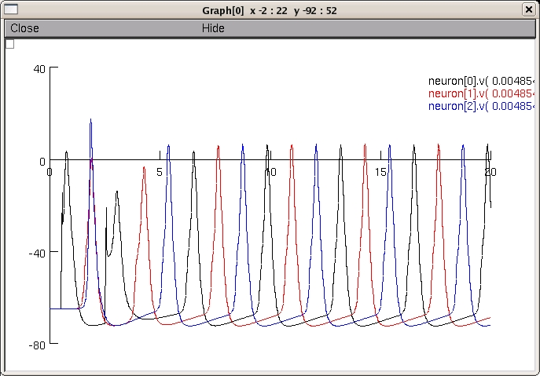
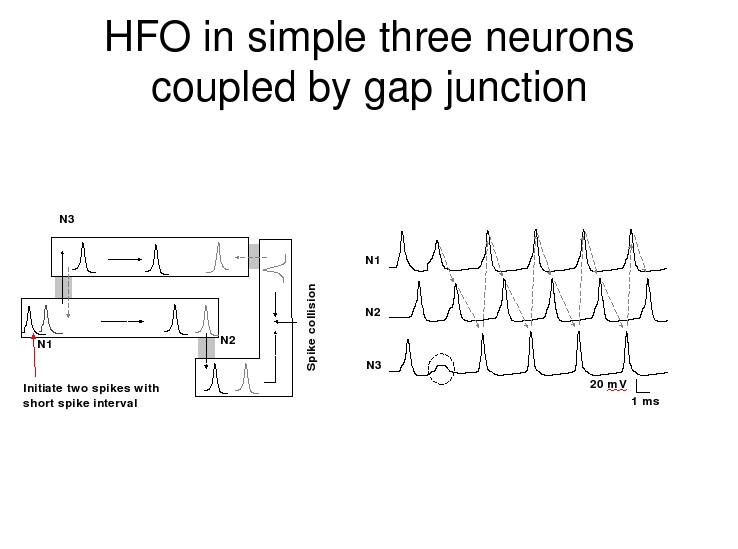

This is the readme for the model code associated with the paper:
Tseng SH, Tsai LY, Yeh SR (2008) Induction of high-frequency
oscillations in a junction-coupled network. J Neurosci 28:7165-73
These model files were supplied by Shin-Hua Tseng.
Usage notes:
The simulation model code was created in NEURON 6.2
(NEURON is available from http://www.neuron.yale.edu)
Follow the below procedure to easily observe oscillation results:
Either auto-launch from ModelDB or download and extract the archive
and then under
mswin:
------
Compile the mod files by running mknrndll
([Start]->[Programs]->[Neuron 6.2]->[mknrndll]), cd'ing to the extracted
folder and selecting to make the nrnmech.dll file. Then start the
simulation by double clicking on the mosinit.hoc file while using the
windows explorer or run [Start]->[Programs]->[Neuron 6.2]->[nrngui],
Change to model directory (from NEURON main menu select [File] ->
[working dir]), and then load the load "mosinit.hoc" hoc file from
NEURON menubar [File]->[load hoc]
MAC OS X:
---------
Drag and drop the HOF folder onto the mknrndll icon. Drag and drop
the mosinit.hoc file onto the nrngui icon.
Linux/Unix:
-----------
Compile the mod files by cd'ing to the extracted folder, HOF, and type
nrnivmodl
nrngui mosinit.hoc
Once the simulation interface has started:
------------------------------------------
From [RunControl], press [Init&Run] to show simulation results.
You should see a figure appear that looks like:

which contains similar data as was used to create figure 2d:

Note:
You can use
gap_r function to change gap junction resistance of each neuron pair
gap_r() will show its usage.
Set_ST to adjust stimulation interval and strength
Set_ST() will show its usage.